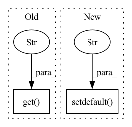

Pattern ID :4459
Before Change
defaults.update(kwargs)
kwargs = defaults
normalizer = EncoderNormalizer(**kwargs)
if kwargs.get("transformation" ) in ["relu", "softplus"]:
data = data - 0.5
if kwargs.get("transformation") in ["relu", "softplus", "log1p"]:After Change
],
)
def test_EncoderNormalizer(kwargs):
kwargs.setdefault("method" , "standard")
kwargs.setdefault("center", True)
kwargs.setdefault("data", torch.rand(100))
data = kwargs.pop("data")
In pattern: SUPERPATTERN
Frequency: 4
Non-data size: 2
Instances Fragment ID: 16284296
Project Name: jdb78/pytorch-forecasting
Commit Name: 09eb7856fd61cd62c765376a0b1b2400fecb4243
Time: 2022-05-14
Author: beitner.jan@bcg.com
File Name: tests/test_data/test_encoders.py
M Class Name: AnonimousClass
N Class Name: AnonimousClass
M Method Name: test_EncoderNormalizer(1)
N Method Name: test_EncoderNormalizer(1)
M Parent Class:
N Parent Class:
M File Name: tests/test_data/test_encoders.py
N File Name: tests/test_data/test_encoders.py
M Start Line: 59
M End Line: 67
N Start Line: 73
N End Line: 76
Before Change
def config():
os.environ["JINA_PARALLEL"] = os.environ.get("JINA_PARALLEL" , "1")
os.environ["JINA_SHARDS"] = os.environ.get("JINA_SHARDS", "1")
os.environ["JINA_WORKSPACE"] = os.environ.get("JINA_WORKSPACE", "workspace")
os.environ["JINA_PORT"] = "45678"
After Change
def config():
os.environ.setdefault("JINA_WORKSPACE" , os.path.join(cur_dir, "workspace"))
os.environ.setdefault(
"JINA_WORKSPACE_MOUNT",
f"{os.environ.get("JINA_WORKSPACE")}:/workspace/workspace")
os.environ.setdefault("JINA_LOG_LEVEL", "INFO") Fragment ID: 16284298
Project Name: jina-ai/examples
Commit Name: 4de569187f138fc79cc6c08852f13315c1e545bc
Time: 2021-08-17
Author: jakob.kruse@jina.ai
File Name: cross-modal-search/app.py
M Class Name: AnonimousClass
N Class Name: AnonimousClass
M Method Name: config(0)
N Method Name: config(0)
M Parent Class:
N Parent Class:
M File Name: cross-modal-search/app.py
N File Name: cross-modal-search/app.py
M Start Line: 19
M End Line: 22
N Start Line: 18
N End Line: 23
Before Change
tags: dict = it["tags"]
for name, info in tags.items():
info = info or dict()
tag = Tag(name, tag_type, info.get("is_hot", False), info.get("aliases" , []) )
self.tags.append(tag)
self.type2tags[tag_type].tags.append(tag)
if tag.is_hot:After Change
for name, info in tags.items():
info = info or dict()
info.setdefault("name", name)
info.setdefault("type" , tag_type)
tag = Tag(**info)
self.tags.append(tag)
self.type2tags[tag_type].tags.append(tag)
if tag.is_hot: Fragment ID: 16284300
Project Name: imhuay/studies
Commit Name: 1cf036731b74f77f8af9cebdca6a17b6c75353ac
Time: 2022-10-16
Author: imhuay@163.com
File Name: src/readme/algorithms.py
M Class Name: _TagInfo
N Class Name: _TagInfo
M Method Name: _load_tag_info(1)
N Method Name: _load_tag_info(1)
M Parent Class:
N Parent Class:
M File Name: src/readme/algorithms.py
N File Name: src/readme/algorithms.py
M Start Line: 106
M End Line: 112
N Start Line: 112
N End Line: 120
Before Change
save_freq=-1,
save_best_only=False,
)
callbacks = [checkpoint_manager, LinearLRScheduler(params.get("learning_rate" , 5e-5) , 1e-7, n_iterations)]
if show_training:
callbacks.append(TrainingHistoryVisualizationCallback("./temp/"))
regularization = RegularizationList([After Change
seed: int = 0,
encoder_data_folder: Optional[str] = None,
):
params.setdefault("smoothing_sigma" , 5)
set_seed(seed)
checkpoints_name = str(hash_params(params))
checkpoint_folder = f"{data_folder}/{checkpoints_name}"
os.makedirs(checkpoint_folder, exist_ok=True) Fragment ID: 16284301
Project Name: neurotorch/neurotorch
Commit Name: e1935377b39da9d0b74f9741bfb2c942a38c9437
Time: 2022-08-22
Author: 50332514+JeremieGince@users.noreply.github.com
File Name: applications/time_series_forecasting_spiking/results_generation.py
M Class Name: AnonimousClass
N Class Name: AnonimousClass
M Method Name: train_with_params(8)
N Method Name: train_with_params(7)
M Parent Class:
N Parent Class:
M File Name: applications/time_series_forecasting_spiking/results_generation.py
N File Name: applications/time_series_forecasting_spiking/results_generation.py
M Start Line: 128
M End Line: 212
N Start Line: 121
N End Line: 233